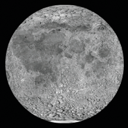
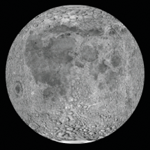
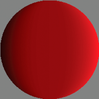

|

The Animated spinning moon example demonstrates techniques for
working with Bitmap objects and bitmap image data (BitmapData objects).
The example creates an animation of a spinning, spherical moon using
a flat image of the moon’s surface as the raw image data. The following
techniques are demonstrated:
-
Loading an external image and accessing its raw image
data
-
Creating animation by repeatedly copying pixels from different
parts of a source image
-
Creating a bitmap image by setting pixel values
To get the application files for this sample, see
www.adobe.com/go/learn_programmingAS3samples_flash
.
The Animated spinning moon application files can be found in the
Samples/SpinningMoon folder. The application consists of the following
files:
|
File
|
Description
|
|
SpinningMoon.mxml
or
SpinningMoon.fla
|
The main application file in Flex (MXML)
or Flash (FLA).
|
|
com/example/programmingas3/moon/MoonSphere.as
|
Class that performs the functionality of
loading, displaying, and animating the moon.
|
|
moonMap.png
|
Image file containing a photograph of the
moon’s surface, which is loaded and used to create the animated,
spinning moon.
|
Loading an external image as bitmap data
The first main task this sample performs is loading an external
image file, which is a photograph of the moon’s surface. The loading
operation is handled by two methods in the MoonSphere class: the
MoonSphere()
constructor,
where the loading process is initiated, and the
imageLoadComplete()
method,
which is called when the external image is completely loaded.
Loading an external image is similar to loading an external SWF;
both use an instance of the flash.display.Loader class to perform
the loading operation. The actual code in the
MoonSphere()
method
that starts loading the image is as follows:
var imageLoader:Loader = new Loader();
imageLoader.contentLoaderInfo.addEventListener(Event.COMPLETE, imageLoadComplete);
imageLoader.load(new URLRequest("moonMap.png"));
The first line declares the Loader instance named
imageLoader
.
The third line actually starts the loading process by calling the
Loader object’s
load()
method, passing a URLRequest
instance representing the URL of the image to load. The second line
sets up the event listener that will be triggered when the image
has completely loaded. Notice that the
addEventListener()
method is
not called on the Loader instance itself; instead, it’s called on
the Loader object’s
contentLoaderInfo
property.
The Loader instance itself doesn’t dispatch events relating to the
content being loaded. Its
contentLoaderInfo
property,
however, contains a reference to the LoaderInfo object that’s associated
with the content being loaded into the Loader object (the external
image in this case). That LoaderInfo object does provide several
events relating to the progress and completion of loading the external
content, including the
complete
event (
Event.COMPLETE
)
that will trigger a call to the
imageLoadComplete()
method
when the image has completely loaded.
While starting the external image loading is an important part
of the process, it’s equally important to know what to do when it
finishes loading. As shown in the code above, the
imageLoadComplete()
function
is called when the image is loaded. That function does several things
with the loaded image data, described subsequently. However, to
use the image data, it needs to access that data. When a Loader
object is used to load an external image, the loaded image becomes
a Bitmap instance, which is attached as a child display object of
the Loader object. In this case, the Loader instance is available
to the event listener method as part of the event object that’s
passed to the method as a parameter. The first lines of the
imageLoadComplete()
method
are as follows:
private function imageLoadComplete(event:Event):void
{
textureMap = event.target.content.bitmapData;
...
}
Notice that the event object parameter is named
event
,
and it’s an instance of the Event class. Every instance of the Event
class has a
target
property, which refers to the
object triggering the event (in this case, the LoaderInfo instance
on which the
addEventListener()
method was called,
as described previously). The LoaderInfo object, in turn, has a
content
property
that (once the loading process is complete) contains the Bitmap
instance with the loaded bitmap image. If you want to display the
image directly on the screen, you can attach this Bitmap instance
(
event.target.content
) to a display object container.
(You could also attach the Loader object to a display object container). However,
in this sample, the loaded content is used as a source of raw image
data rather than being displayed on the screen. Consequently, the
first line of the
imageLoadComplete()
method reads
the
bitmapData
property of the loaded Bitmap instance
(
event.target.content.bitmapData
) and stores it
in the instance variable named
textureMap
, which
is used as a source of the image data to create the animation of
the rotating moon. This is described next.
Creating animation by copying pixels
A basic definition of animation is the illusion of motion, or
change, created by changing an image over time. In this sample,
the goal is to create the illusion of a spherical moon rotating
around its vertical axis. However, for the purposes of the animation,
you can ignore the spherical distortion aspect of the sample. Consider the
actual image that’s loaded and used as the source of the moon image
data:
As you can see, the image is not one or several spheres; it’s
a rectangular photograph of the surface of the moon. Because the
photo was taken exactly at the moon’s equator, the parts of the
image that are closer to the top and bottom of the image are stretched
and distorted. To remove the distortion from the image and make
it appear spherical, we will use a displacement map filter, as described later.
However, because this source image is a rectangle, to create the
illusion that the sphere is rotating, the code simply needs to slide
the moon surface photo horizontally.
Notice that the image actually contains two copies of the moon
surface photograph next to each other. This image is the source
image from which image data is copied repeatedly to create the appearance
of motion. By having two copies of the image next to each other,
a continuous, uninterrupted scrolling effect can more easily be
created. Let’s walk through the process of the animation step-by-step
to see how this works.
The process actually involves two separate ActionScript objects.
First, there is the loaded source image, which in the code is represented
by the BitmapData instance named
textureMap
. As
described previously,
textureMap
is populated with
image data as soon as the external image loads, using this code:
textureMap = event.target.content.bitmapData;
The content of
textureMap
is the rectangle moon
image. In addition, to create the animated rotation, the code uses
a Bitmap instance named
sphere
, which is the actual
display object that shows the moon image onscreen. Like
textureMap
,
the
sphere
object is created and populated with
its initial image data in the
imageLoadComplete()
method,
using the following code:
sphere = new Bitmap();
sphere.bitmapData = new BitmapData(textureMap.width / 2, textureMap.height);
sphere.bitmapData.copyPixels(textureMap,
new Rectangle(0, 0, sphere.width, sphere.height),
new Point(0, 0));
As the code shows,
sphere
is instantiated. Its
bitmapData
property
(the raw image data that is displayed by
sphere
)
is created with the same height and half the width of
textureMap
.
In other words, the content of
sphere
will be the size
of one moon photo (since the
textureMap
image contains
two moon photos side-by-side). Next the
bitmapData
property
is filled with image data using its
copyPixels()
method.
The parameters in the
copyPixels()
method call
indicate several things:
-
The first parameter indicates that the image data is
copied from
textureMap
.
-
The second parameter, a new Rectangle instance, specifies
from which part of
textureMap
the image snapshot
should be taken; in this case the snapshot is a rectangle starting
from the top left corner of
textureMap
(indicated
by the first two
Rectangle()
parameters:
0, 0
)
and the rectangle snapshot’s width and height match the
width
and
height
properties
of
sphere
.
-
The third parameter, a new Point instance with x and y values
of
0
, defines the destination of the pixel data—in
this case, the top-left corner (0, 0) of
sphere.bitmapData
.
Represented visually, the code copies the pixels from
textureMap
outlined
in the following image and pastes them onto
sphere
.
In other words, the BitmapData content of
sphere
is
the portion of
textureMap
highlighted here:
Remember, however, that this is just the initial state of
sphere
—the
first image content that’s copied onto
sphere
.
With the source image loaded and
sphere
created,
the final task performed by the
imageLoadComplete()
method
is to set up the animation. The animation is driven by a Timer instance
named
rotationTimer
, which is created and started
by the following code:
var rotationTimer:Timer = new Timer(15);
rotationTimer.addEventListener(TimerEvent.TIMER, rotateMoon);
rotationTimer.start();
The code first creates the Timer instance named
rotationTimer
;
the parameter passed to the
Timer()
constructor
indicates that
rotationTimer
should trigger its
timer
event
every 15 milliseconds. Next, the
addEventListener()
method
is called, specifying that when the
timer
event
(
TimerEvent.TIMER
) occurs, the method
rotateMoon()
is
called. Finally, the timer is actually started by calling its
start()
method.
Because of the way
rotationTimer
is defined,
approximately every 15 milliseconds Flash Player calls the
rotateMoon()
method
in the MoonSphere class, which is where the animation of the moon
happens. The source code of the
rotateMoon()
method
is as follows:
private function rotateMoon(event:TimerEvent):void
{
sourceX += 1;
if (sourceX > textureMap.width / 2)
{
sourceX = 0;
}
sphere.Data.copyPixels(textureMap,
new Rectangle(sourceX, 0, sphere.width, sphere.height),
new Point(0, 0));
event.updateAfterEvent();
}
The code does three things:
-
The value of the variable
sourceX
(initially
set to 0) increments by 1.
sourceX += 1;
As
you’ll see,
sourceX
is used to determine the location
in
textureMap
from which the pixels will be copied
onto
sphere
, so this code has the effect of moving
the rectangle one pixel to the right on
textureMap
.
Going back to the visual representation, after several cycles of
animation the source rectangle will have moved several pixels to
the right, like this:
After
several more cycles, the rectangle will have moved even farther:
This
gradual, steady shift in the location from which the pixels are
copied is the key to the animation. By slowly and continuously moving
the source location to the right, the image that is displayed on
the screen in
sphere
appears to continuously slide
to the left. This is the reason why the source image (
textureMap
)
needs to have two copies of the moon surface photo. Because the
rectangle is continually moving to the right, most of the time it
is not over one single moon photo but rather overlaps the two moon
photos.
-
With the source rectangle slowly moving to the right, there
is one problem. Eventually the rectangle will reach the right edge
of
textureMap
and it will run out of moon photo
pixels to copy onto
sphere
:
The
next lines of code address this issue:
if (sourceX >= textureMap.width / 2)
{
sourceX = 0;
}
The code checks if
sourceX
(the
left edge of the rectangle) has reached the middle of
textureMap
.
If so, it resets
sourceX
back to 0, moving it back
to the left edge of
textureMap
and starting the
cycle over again:
-
With the appropriate
sourceX
value calculated,
the final step in creating the animation is to actually copy the
new source rectangle pixels onto
sphere
. The code
that does this is very similar to the code that initially populated
sphere
(described
previously); the only difference is that in this case, in the
new Rectangle()
constructor
call, the left edge of the rectangle is placed at
sourceX
:
sphere.bitmapData.copyPixels(textureMap,
new Rectangle(sourceX, 0, sphere.width, sphere.height),
new Point(0, 0));
Remember that this code is called repeatedly, every 15 milliseconds.
As the source rectangle’s location is continuously shifted, and
the pixels are copied onto
sphere
, the appearance
on the screen is that the moon photo image represented by
sphere
continuously
slides. In other words, the moon appears to rotate continuously.
Creating the spherical appearance
The moon, of course, is a sphere and not a rectangle. Consequently,
the sample needs to take the rectangular moon surface photo, as
it continuously animates, and convert it into a sphere. This involves
two separate steps: a mask is used to hide all the content except
for a circular region of the moon surface photo, and a displacement
map filter is used to distort the appearance of the moon photo to make
it look three-dimensional.
First, a circle-shaped mask is used to hide all the content of
the MoonSphere object except for the sphere created by the filter.
The following code creates the mask as a Shape instance and applies
it as the mask of the MoonSphere instance:
moonMask = new Shape();
moonMask.graphics.beginFill(0);
moonMask.graphics.drawCircle(0, 0, radius);
this.addChild(moonMask);
this.mask = moonMask;
Note that since MoonSphere is a display object (it is based on
the Sprite class), the mask can be applied directly to the MoonSphere
instance using its inherited
mask
property.

Simply hiding parts of the photo using a circle-shaped mask isn’t
enough to create a realistic-looking rotating-sphere effect. Because
of the way the photo of the moon’s surface was taken, its dimensions
aren’t proportional; the portions of the image that are more toward
the top or bottom of the image are more distorted and stretched
compared to the portions in the equator. To distort the appearance
of the moon photo to make it look three-dimensional, we’ll use a displacement
map filter.
A displacement map filter is a type of filter that is used to
distort an image. In this case, the moon photo will be “distorted”
to make it look more realistic, by squeezing the top and bottom
of the image horizontally, while leaving the middle unchanged. Assuming
the filter operates on a square-shaped portion of the photo, squeezing
the top and bottom but not the middle will turn the square into
a circle. A side effect of animating this distorted image is that
the middle of the image seems to move farther in actual pixel distance
than the areas close to the top and bottom, which creates the illusion
that the circle is actually a three-dimensional object (a sphere).
The following code is used to create the displacement map filter,
named
displaceFilter
:
var displaceFilter:DisplacementMapFilter;
displaceFilter = new DisplacementMapFilter(fisheyeLens,
new Point(radius, 0),
BitmapDataChannel.RED,
BitmapDataChannel.GREEN,
radius, 0);
The first parameter,
fisheyeLens
, is known as
the map image; in this case it is a BitmapData object that is created
programmatically. The creation of that image is described in
Creating a bitmap image by setting pixel values
. The other parameters
describe the position in the filtered image at which the filter
should be applied, which color channels will be used to control
the displacement effect, and to what extent they will affect the
displacement. Once the displacement map filter is created, it is
applied to
sphere
, still within the
imageLoadComplete()
method:
sphere.filters = [displaceFilter];
The final image, with mask and displacement map filter applied,
looks like this:

With every cycle of the rotating moon animation, the BitmapData
content of sphere is overwritten by a new snapshot of the source
image data. However, the filter does not need to be re-applied each
time. This is because the filter is applied to the Bitmap instance
(the display object) rather than to the bitmap data (the raw pixel
information). Remember, the Bitmap instance is not the actual bitmap data;
it is a display object that displays the bitmap data on the screen.
To use an analogy, a Bitmap instance is like the slide projector
that is used to display photographic slides on a screen, and a BitmapData
object is like the actual photographic slide that can be presented
through a slide projector. A filter can be applied directly to a
BitmapData object, which would be comparable to drawing directly
onto a photographic slide to alter the image. A filter can also
be applied to any display object, including a Bitmap instance; this
would be like placing a filter in front of the slide projector’s
lens to distort the output shown on the screen (without altering
the original slide at all). Because the raw bitmap data is accessible
through a Bitmap instance’s bitmapData property, the filter could have
been applied directly to the raw bitmap data. However, in this case,
it makes sense to apply the filter to the Bitmap display object
rather than to the bitmap data.
For detailed information about using the displacement map filter
in ActionScript, see
Filtering display objects
.
Creating a bitmap image by setting pixel values
One important aspect of a displacement map filter is that it
actually involves two images. One image, the source image, is the
image that is actually altered by the filter. In this sample, the
source image is the Bitmap instance named
sphere
. The
other image used by the filter is known as the map image. The map
image is not actually displayed on the screen. Instead, the color
of each of its pixels is used as an input to the displacement function—the
color of the pixel at a certain x, y coordinate in the map image
determines how much displacement (physical shift in position) is
applied to the pixel at that x, y coordinate in the source image.
Consequently, to use the displacement map filter to create a
sphere effect, the sample needs the appropriate map image—one that
has a gray background and a circle that’s filled with a gradient
of a single color (red) going horizontally from dark to light, as
shown here:

Because only one map image and filter are used in this sample,
the map image is only created once, in the
imageLoadComplete()
method
(in other words, when the external image finishes loading). The
map image, named
fisheyeLens
, is created by calling
the MoonSphere class’s
createFisheyeMap()
method:
var fisheyeLens:BitmapData = createFisheyeMap(radius);
Inside the
createFisheyeMap()
method, the map
image is actually drawn one pixel at a time using the BitmapData
class’s
setPixel()
method. The complete code for
the
createFisheyeMap()
method is listed here, followed by
a step-by-step discussion of how it works:
private function createFisheyeMap(radius:int):BitmapData
{
var diameter:int = 2 * radius;
var result:BitmapData = new BitmapData(diameter,
diameter,
false,
0x808080);
// Loop through the pixels in the image one by one
for (var i:int = 0; i < diameter; i++)
{
for (var j:int = 0; j < diameter; j++)
{
// Calculate the x and y distances of this pixel from
// the center of the circle (as a percentage of the radius).
var pctX:Number = (i - radius) / radius;
var pctY:Number = (j - radius) / radius;
// Calculate the linear distance of this pixel from
// the center of the circle (as a percentage of the radius).
var pctDistance:Number = Math.sqrt(pctX * pctX + pctY * pctY);
// If the current pixel is inside the circle,
// set its color.
if (pctDistance < 1)
{
// Calculate the appropriate color depending on the
// distance of this pixel from the center of the circle.
var red:int;
var green:int;
var blue:int;
var rgb:uint;
red = 128 * (1 + 0.75 * pctX * pctX * pctX / (1 - pctY * pctY));
green = 0;
blue = 0;
rgb = (red << 16 | green << 8 | blue);
// Set the pixel to the calculated color.
result.setPixel(i, j, rgb);
}
}
}
return result;
}
First, when the method is called it receives a parameter,
radius
,
indicating the radius of the circle-shaped image to create. Next,
the code creates the BitmapData object on which the circle will
be drawn. That object, named
result
, is eventually
passed back as the return value of the method. As shown in the following
code snippet, the
result
BitmapData instance is
created with a width and height as big as the diameter of the circle,
without transparency (
false
for the third parameter),
and pre-filled with the color
0x808080
(middle
gray):
var result:BitmapData = new BitmapData(diameter,
diameter,
false,
0x808080);
Next, the code uses two loops to iterate over each pixel of the
image. The outer loop goes through each column of the image from
left to right (using the variable
i
to represent
the horizontal position of the pixel currently being manipulated), while
the inner loop goes through each pixel of the current column from
top to bottom (with the variable
j
representing
the vertical position of the current pixel). The code for the loops
(with the inner loop’s contents omitted) is shown here:
for (var i:int = 0; i < diameter; i++)
{
for (var j:int = 0; j < diameter; j++)
{
...
}
}
As the loops cycle through the pixels one by one, at each pixel
a value (the color value of that pixel in the map image) is calculated.
This process involves four steps:
-
The code calculates the distance of the current pixel
from the center of the circle along the x axis (
i - radius
).
That value is divided by the radius to make it a percentage of the
radius rather than an absolute distance (
(i - radius) / radius
).
That percentage value is stored in a variable named
pctX
,
and the equivalent value for the y axis is calculated and stored
in the variable
pctY
, as shown in this code:
var pctX:Number = (i - radius) / radius;
var pctY:Number = (j - radius) / radius;
-
Using a standard trigonometric formula, the Pythagorean theorem,
the linear distance between the center of the circle and the current
point is calculated from
pctX
and
pctY
.
That value is stored in a variable named
pctDistance
,
as shown here:
var pctDistance:Number = Math.sqrt(pctX * pctX + pctY * pctY);
-
Next, the code checks whether the distance percentage is
less than 1 (meaning 100% of the radius, or in other words, if the
pixel being considered is within the radius of the circle). If the
pixel falls inside the circle, it is assigned a calculated color
value (omitted here, but described in step 4); if not, nothing further
happens with that pixel so its color is left as the default middle
gray:
if (pctDistance < 1)
{
...
}
-
For those pixels that fall inside the circle, a color value
is calculated for the pixel. The final color will be a shade of
red ranging from black (0% red) at the left edge of the circle to
bright (100%) red at the right edge of the circle. The color value
is initially calculated in three parts (red, green, and blue), as
shown here:
red = 128 * (1 + 0.75 * pctX * pctX * pctX / (1 - pctY * pctY));
green = 0;
blue = 0;
Notice that only the red portion of the
color (the variable
red
) actually has a value.
The green and blue values (the variables
green
and
blue
)
are shown here for clarity, but could be omitted. Since the purpose
of this method is to create a circle that contains a red gradient,
no green or blue values are needed.
Once the three individual
color values are determined, they are combined into a single integer
color value using a standard bit-shifting algorithm, shown in this
code:
rgb = (red << 16 | green << 8 | blue);
Finally,
with the color value calculated, that value is actually assigned
to the current pixel using the
setPixel()
method
of the
result
BitmapData object, shown here:
result.setPixel(i, j, rgb);
|
|
|